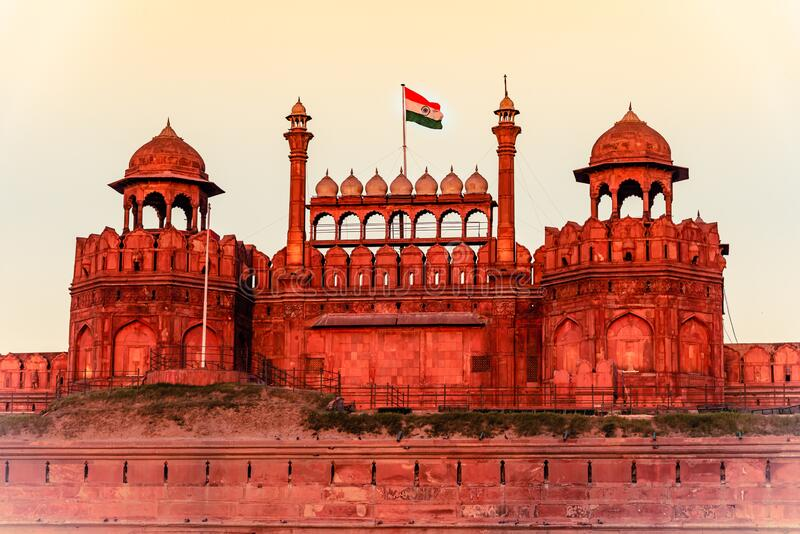

The Red Fort or Lal Qila (Hindustani: [laːlqiːlaː]) is a historic fort in Old Delhi, Delhi in India that
served as the main residence of the Mughal Emperors. Emperor Shah Jahan commissioned construction of the Red
Fort on 12 May 1638, when he decided to shift his capital from Agra to Delhi. Originally red and white, its
design is credited to architect Ustad Ahmad Lahori, who also constructed the Taj Mahal. The fort represents
the peak in Mughal architecture under Shah Jahan, and combines Persianate palace architecture with Indian
traditions.
The fort was plundered of its artwork and jewels during Nader Shah's invasion of the Mughal Empire in 1739. Most
of the fort's marble structures were subsequently demolished by the British following the Indian Rebellion of
1857. The fort's defensive walls were largely undamaged, and the fortress was subsequently used as a garrison.
On 15 August 1947, the first Prime Minister of India, Jawaharlal Nehru, raised the Indian flag above the Lahori
Gate. Every year on India's Independence Day (15 August), the Prime Minister hoists the Indian tricolour flag at
the fort's main gate and delivers a nationally broadcast speech from its ramparts.
The Red Fort was designated a UNESCO World Heritage Site in 2007 as part of the Red Fort Complex.